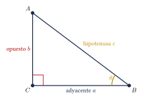
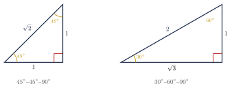
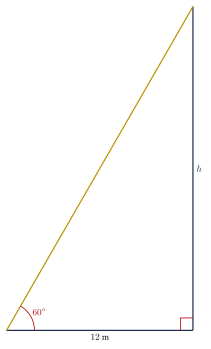

Capítulo 25
Razones trigonométricas
UNAMIPNCENEVAL
Las razones trigonométricas relacionan las longitudes de los lados de un triángulo rectángulo con las medidas de sus ángulos agudos. Estas relaciones permiten calcular alturas, distancias y ángulos que no pueden medirse directamente. En este capítulo estudiarás las seis razones trigonométricas, los valores de los ángulos notables y los procedimientos para resolver triángulos rectángulos.
25.1 Triángulo rectángulo#
Un triángulo rectángulo es un triángulo que tiene un ángulo interior de:
Los lados que forman el ángulo recto se denominan catetos. El lado opuesto al ángulo recto se denomina hipotenusa.
En todo triángulo rectángulo, el cuadrado de la longitud de la hipotenusa es igual a la suma de los cuadrados de las longitudes de los catetos:
donde \(c\) representa la hipotenusa y \(a\) y \(b\) representan los catetos.
La hipotenusa siempre es:
- el lado opuesto al ángulo recto;
- el lado de mayor longitud del triángulo.
La siguiente figura muestra un triángulo rectángulo y un ángulo agudo de referencia \(\theta\):

25.2 Lados relativos a un ángulo#
Respecto de un ángulo agudo \(\theta\) de un triángulo rectángulo, los lados reciben los siguientes nombres:
- El cateto opuesto es el cateto que se encuentra frente al ángulo \(\theta\).
- El cateto adyacente es el cateto que forma parte del ángulo \(\theta\).
- La hipotenusa es el lado opuesto al ángulo recto.
Los nombres “opuesto” y “adyacente” dependen del ángulo de referencia.
En un mismo triángulo, el cateto que es opuesto respecto de un ángulo agudo es adyacente respecto del otro. La hipotenusa, en cambio, no cambia.
25.3 Definición de las razones trigonométricas#
Dado un ángulo agudo \(\theta\) en un triángulo rectángulo, se definen las seis razones trigonométricas de la siguiente manera:
Una forma habitual de recordar las tres razones principales es:
Estas letras corresponden a:
Las funciones cosecante, secante y cotangente son los recíprocos del seno, coseno y tangente, respectivamente:
La tangente y la cotangente pueden expresarse mediante el seno y el coseno:
Las razones que contienen una división solo están definidas cuando su denominador es distinto de cero. Por ejemplo:
no está definida cuando:
En un triángulo rectángulo, el cateto opuesto a un ángulo \(\theta\) mide \(3\ \text{cm}\) y la hipotenusa mide \(5\ \text{cm}\). Encuentra las seis razones trigonométricas de \(\theta\).
Ver solución
Primero calculamos el cateto adyacente mediante el teorema de Pitágoras. Sea \(a\) su longitud:
Como se trata de una longitud, conservamos la raíz positiva.
Ahora tenemos:
Por tanto:
25.4 Identidades pitagóricas#
Para todo ángulo \(\theta\) para el que estén definidas las razones correspondientes:
A partir de la identidad fundamental pueden obtenerse:
y:
La notación:
significa:
no:
Si:
y \(\theta\) es un ángulo agudo, encuentra \(\cos\theta\).
Ver solución
Aplicamos la identidad fundamental:
Sustituimos:
Como \(\theta\) es agudo, el coseno es positivo:
25.5 Triángulos notables#
Los valores exactos de las razones trigonométricas de \(30^\circ\), \(45^\circ\) y \(60^\circ\) pueden obtenerse a partir de dos triángulos especiales.
25.5.1 Triángulo de \(45^\circ\)–\(45^\circ\)–\(90^\circ\)#
Un triángulo rectángulo isósceles tiene dos ángulos de \(45^\circ\). Si cada cateto mide \(1\), el teorema de Pitágoras permite calcular la hipotenusa:
Por tanto:
25.5.2 Triángulo de \(30^\circ\)–\(60^\circ\)–\(90^\circ\)#
Si se divide un triángulo equilátero de lado \(2\) mediante una altura, se obtienen dos triángulos rectángulos con:
Los dos triángulos especiales pueden compararse en figuras uniformes:

25.6 Valores de los ángulos notables#
Los valores exactos de las tres razones trigonométricas principales son:
Los valores del seno y del coseno de \(30^\circ\) y \(60^\circ\) están intercambiados:
Además:
porque en un triángulo de \(45^\circ\)–\(45^\circ\)–\(90^\circ\) los dos catetos tienen la misma longitud.
A partir de los valores anteriores se obtiene:
Calcula:
Ver solución
Sustituimos los valores notables:
Calcula:
Ver solución
Sustituimos:
25.7 Funciones trigonométricas inversas#
Las funciones trigonométricas inversas permiten encontrar un ángulo cuando se conoce el valor de una razón trigonométrica:
En muchas calculadoras se utilizan las notaciones:
En este contexto, el exponente \(-1\) indica la función inversa, no el recíproco. Por ejemplo:
mientras que:
Antes de calcular un ángulo, debe verificarse si la calculadora está configurada en grados o en radianes.
Si el problema expresa los ángulos mediante el símbolo \({}^\circ\), la calculadora debe estar en modo de grados.
En un triángulo rectángulo, el cateto opuesto a \(\theta\) mide \(3\ \text{cm}\) y el cateto adyacente mide \(4\ \text{cm}\). Encuentra el ángulo \(\theta\).
Ver solución
Utilizamos la tangente:
Aplicamos la función inversa:
En grados:
25.8 Resolución de triángulos rectángulos#
Resolver un triángulo significa determinar las longitudes de todos sus lados y las medidas de todos sus ángulos.
Para resolver un triángulo rectángulo:
- identifica el ángulo recto y la hipotenusa;
- selecciona uno de los ángulos agudos como referencia;
- identifica el cateto opuesto y el cateto adyacente respecto de ese ángulo;
- anota los datos conocidos y la incógnita;
- elige la razón trigonométrica que relacione directamente esos datos;
- plantea y resuelve la ecuación;
- utiliza el teorema de Pitágoras o la relación: \[\alpha+\beta=90^\circ\] para determinar los datos restantes;
- comprueba que la hipotenusa sea el lado de mayor longitud.
En un triángulo rectángulo, el cateto opuesto a un ángulo de \(30^\circ\) mide \(8\ \text{cm}\). Encuentra la hipotenusa.
Ver solución
Sea \(c\) la hipotenusa. Utilizamos el seno:
Como:
se tiene:
La hipotenusa mide:
25.9 Ángulos de elevación y depresión#
Un ángulo de elevación es el ángulo formado entre una línea horizontal y una línea de visión dirigida hacia un objeto situado por encima del observador.
Un ángulo de depresión es el ángulo formado entre una línea horizontal y una línea de visión dirigida hacia un objeto situado por debajo del observador.
La línea horizontal del observador y el suelo suelen ser paralelos. Por esta razón, el ángulo de depresión y el ángulo de elevación correspondiente tienen la misma medida, pues son ángulos alternos internos.
Un árbol proyecta una sombra de \(12\ \text{m}\) cuando el ángulo de elevación del Sol es de \(60^\circ\). Encuentra la altura del árbol.
Ver solución
Representamos la situación mediante un triángulo rectángulo:

La altura es el cateto opuesto y la sombra es el cateto adyacente. Utilizamos la tangente:
Como:
se tiene:
Por tanto:
Aproximadamente:
Una escalera de \(5\ \text{m}\) se apoya contra una pared y forma un ángulo de \(60^\circ\) con el suelo. ¿A qué altura llega la escalera?
Ver solución
La escalera es la hipotenusa y la altura es el cateto opuesto al ángulo de \(60^\circ\). Utilizamos el seno:
Sustituimos el valor notable:
Despejamos:
Aproximadamente:
En problemas de aplicación, la figura debe interpretarse antes de elegir una razón trigonométrica.
No debe suponerse que una medida corresponde al cateto opuesto o adyacente sin identificar primero el ángulo de referencia.
25.10 Ejercicios propuestos#
En un triángulo rectángulo, el cateto opuesto a \(\theta\) mide \(6\ \text{cm}\) y la hipotenusa mide \(10\ \text{cm}\). Encuentra:
Ver solución
Cateto adyacente: \(b^2 = 10^2 - 6^2 = 64\), entonces \(b = 8\). \[\sen\theta = \frac{6}{10} = \frac{3}{5}, \quad \cos\theta = \frac{8}{10} = \frac{4}{5}, \quad \tan\theta = \frac{6}{8} = \frac{3}{4}.\]
En un triángulo rectángulo, el cateto adyacente a \(\theta\) mide \(8\ \text{cm}\) y el cateto opuesto mide \(15\ \text{cm}\). Encuentra:
Ver solución
Hipotenusa: \(c^2 = 8^2 + 15^2 = 64 + 225 = 289\), entonces \(c = 17\). \[\sen\theta = \frac{15}{17}, \quad \cos\theta = \frac{8}{17}, \quad \tan\theta = \frac{15}{8}.\]
Calcula:
Ver solución
Calcula:
Ver solución
Calcula:
Ver solución
Un poste proyecta una sombra de \(8\ \text{m}\) cuando el ángulo de elevación del Sol es de \(45^\circ\). ¿Cuál es la altura del poste?
Ver solución
Un edificio de \(30\ \text{m}\) proyecta una sombra de \(10\ \text{m}\). Encuentra el ángulo de elevación del Sol.
Ver solución
Una rampa de \(6\ \text{m}\) de longitud forma un ángulo de \(30^\circ\) con el suelo. ¿A qué altura llega la rampa?
Ver solución
Un cable de \(20\ \text{m}\) sujeta una antena y forma un ángulo de \(60^\circ\) con el suelo. ¿A qué altura de la antena está sujeto el cable?
Ver solución
En un triángulo rectángulo, la hipotenusa mide \(10\ \text{cm}\) y uno de los ángulos agudos mide \(30^\circ\). Encuentra la longitud del cateto opuesto a ese ángulo.